Official video
Magic
The official visual for BIBICENTRIC’s 2020 single.
Watch on YouTubeNigerian soul · R&B · live performance
A soul singer, songwriter, and performer who owns every stage — powerhouse vocals, magnetic presence.
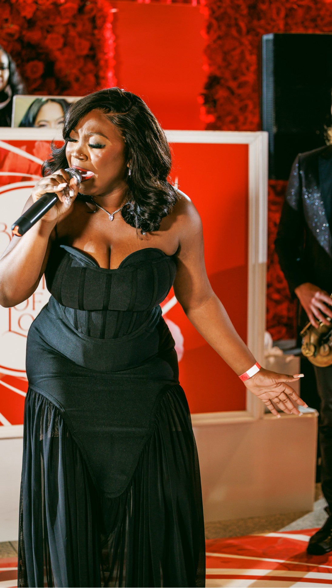
God is within her, she will not fall.Psalm 46:5
Music that holds love, solitude, family and quiet strength in the same room.
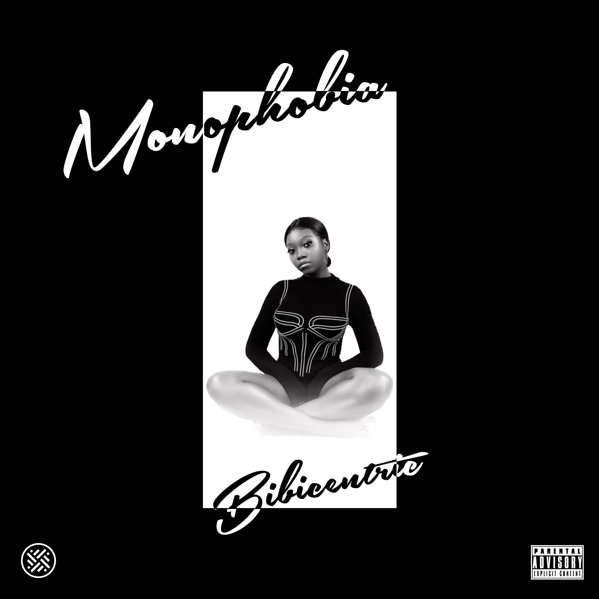
Debut EP
A five-track R&B and soul project with jazz references, drawn from lived emotions around love and family. Its five tracks move through intimate, emotionally direct arrangements.
The story
The name changed. The center held: a voice built for truth, intimacy and the stage.
Bola Akinlaja began music training at 15 and emerged in Lagos as Bibi, releasing “Jeje” and “Endlessly” in 2016 after training at Tenstrings Music Institute. Tenstrings named her its Artist of the Year.
By 2020 she had returned as Bibicentric, an independent soul artist with the single “Magic” and her debut EP, Monophobia. Her sound draws from soul, R&B and jazz, while her live work carries the immediacy she has long called her strength.
Her story stretches from Surulere and Nigeria’s music stages toward a wider global chapter—always rooted in faith, family and emotional honesty.
From a childhood microphone to the Tenstrings stages that shaped BIBI’s early live voice.
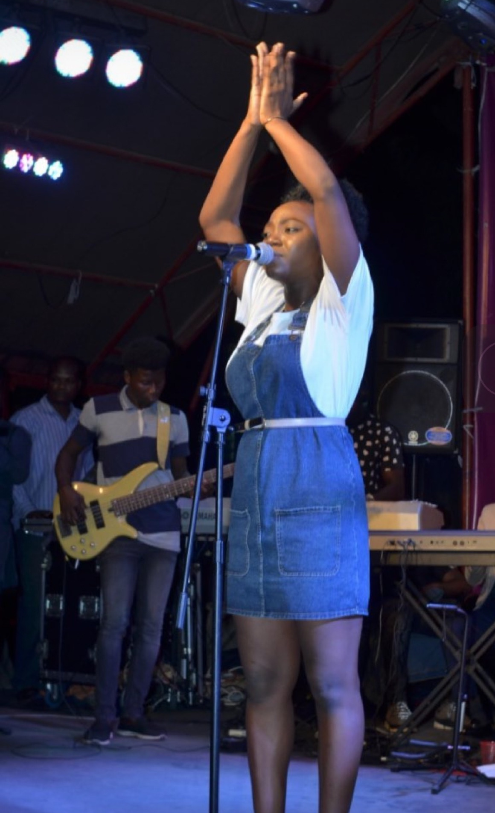
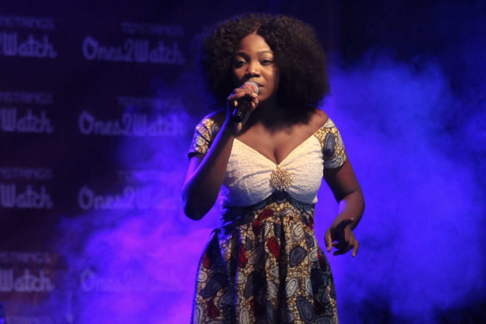
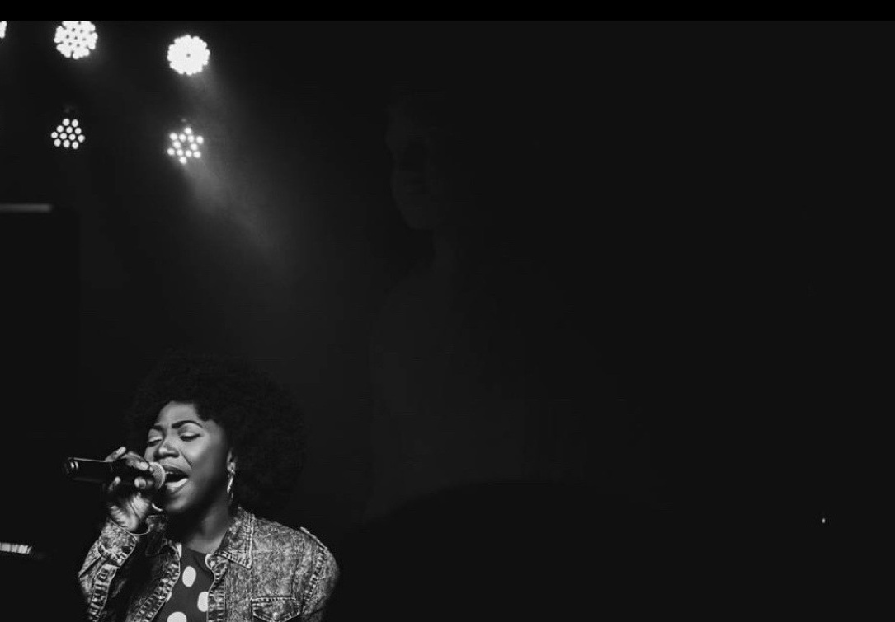
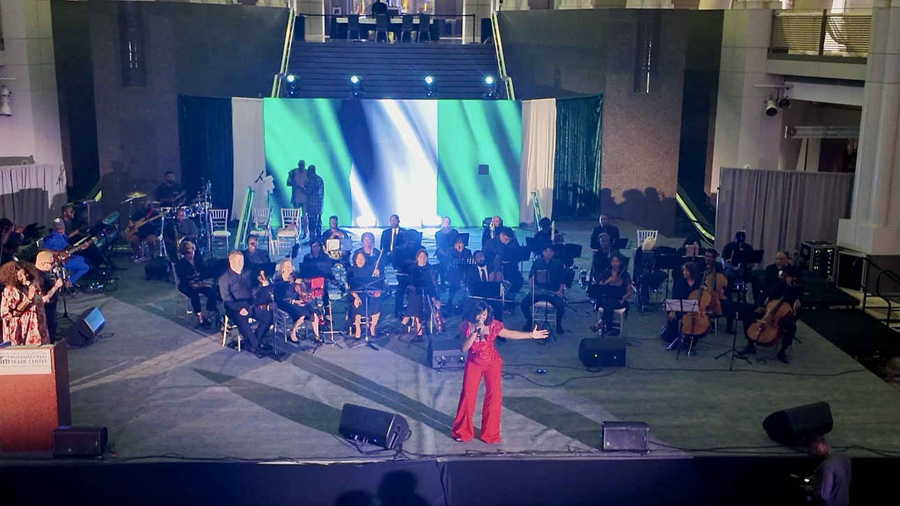
Lagos-born · DMV-based
From early stages in Lagos to orchestra-backed performances in Washington, BIBI brings the same emotional truth to every room.
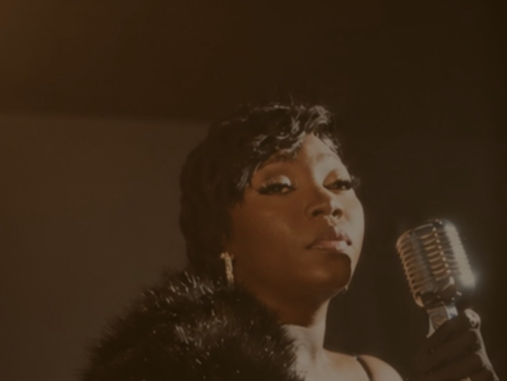
My voice is my instrument, and I see it as a gift that allows me to connect with people, tell stories, and express emotions that words alone sometimes cannot.— BIBI
Official visuals, intimate sessions, reinterpretations and performances from the stage.
Official video
The official visual for BIBICENTRIC’s 2020 single.
Watch on YouTubeLive
A stripped-back performance centered on voice and musicianship.
Watch on YouTubeAcoustic session
BIBI and guitar in an intimate medley session.
Watch on YouTubeCover
BIBI’s rendition of the classic song.
Watch on YouTubeLive
BIBI performs her single “YOU” in a full-band live session.
Watch on YouTubeStudio performance
A focused studio performance of “You.”
Watch on YouTubeLive
A 13-minute concert performance of BIBI’s original songs, including “Irey.”
Watch on YouTubeLive
A 21-minute Afro-fusion performance.
Watch on YouTubeCover
An intimate acoustic rendition.
Watch on YouTube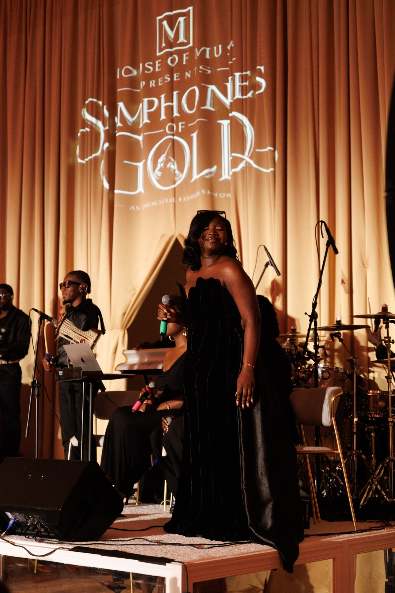
Instagram Reel
BIBI performs at Symphonies of Gold in Washington, DC.
Watch on Instagram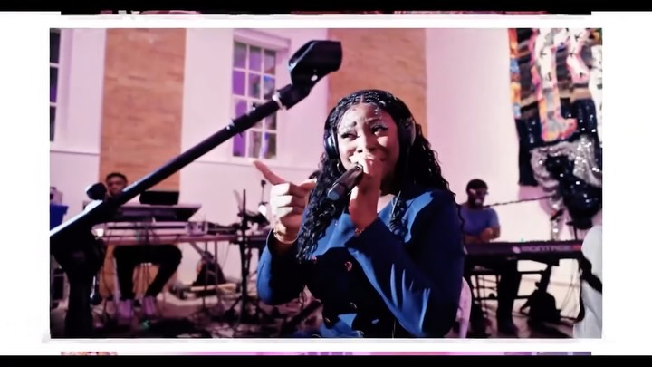
Instagram Reel
A reimagined live performance in Washington, DC.
Watch on InstagramWatch every official video, session, cover and performance in one place.
Onstage, in session and inside the moments where the music becomes shared.
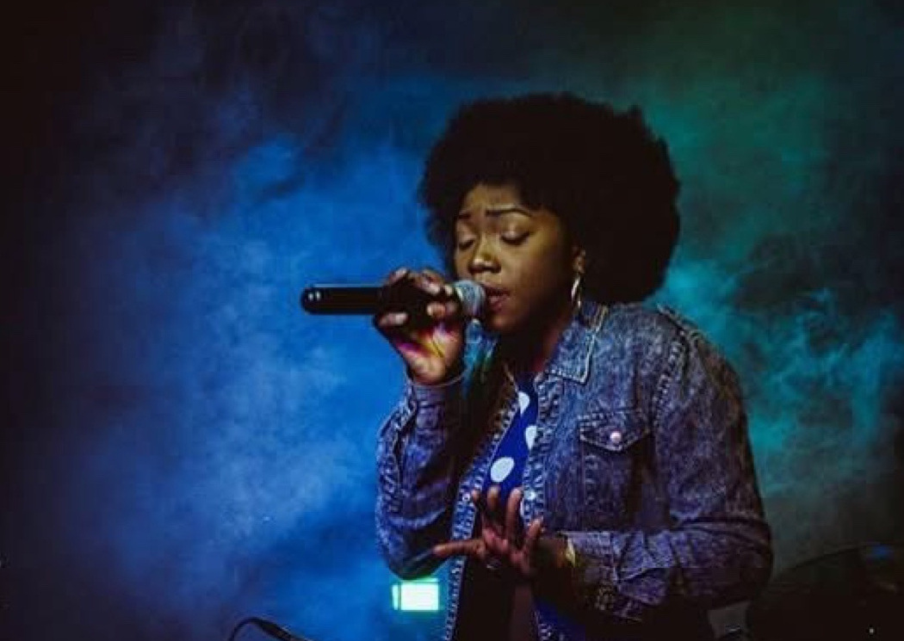
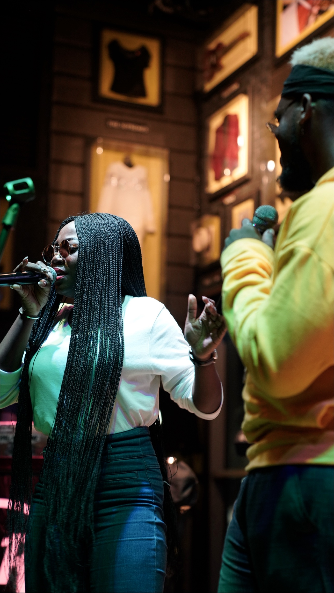
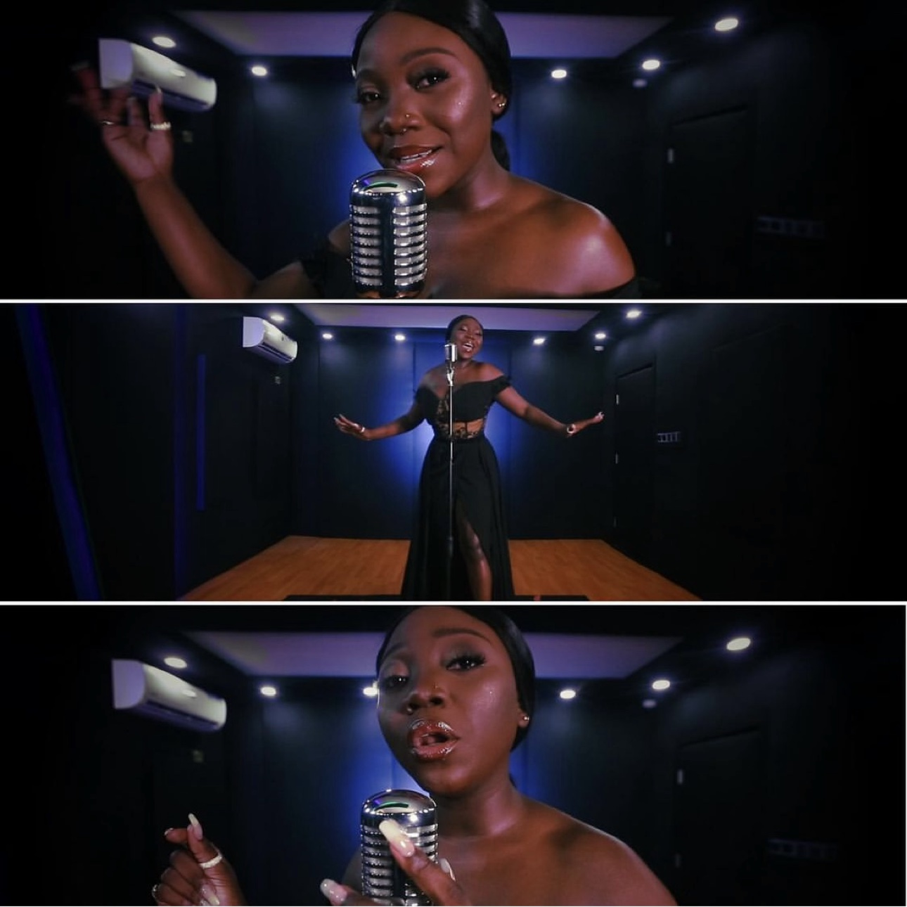
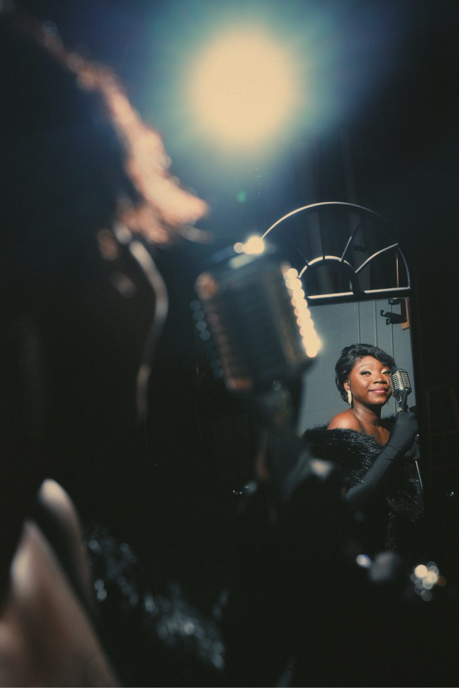
A selected archive spanning the early Bibi era and the emergence of Bibicentric.
Artist of the Year profile tracing her training and the release of “Jeje” and “Endlessly.”
Read featureA launch feature introducing both early singles and the artist then known as Bibi.
Read featurePremiere coverage for the early singles “Jeje” and “Endlessly.”
Read coverageAn early-career profile positioning Bibi as a distinctive new voice in Nigerian music.
Read featureA 50-minute conversation on independence, lessons from the industry and being a young female soul singer.
Hear interviewAn introduction to Bibicentric and the sensual, laid-back sound of her debut EP.
Read featureAn in-depth conversation about Lagos roots, influences, independence and the power of live performance.
Read interviewA review highlighting the emotional vocal delivery and R&B/jazz production on Monophobia.
Read reviewCoverage of the MTN Live from Home concert, where Bibicentric performed “Mama’s Prayers.”
Read coverageElectronic press kit
Nigerian R&B and soul singer, songwriter and performer. Lagos-born, DMV-based.
For profiles and event listings: some early coverage appears under “Bibi”; music released from 2020 onward appears under “Bibicentric.”
Bookings & press
For bookings, press and professional inquiries, contact BIBI by email.